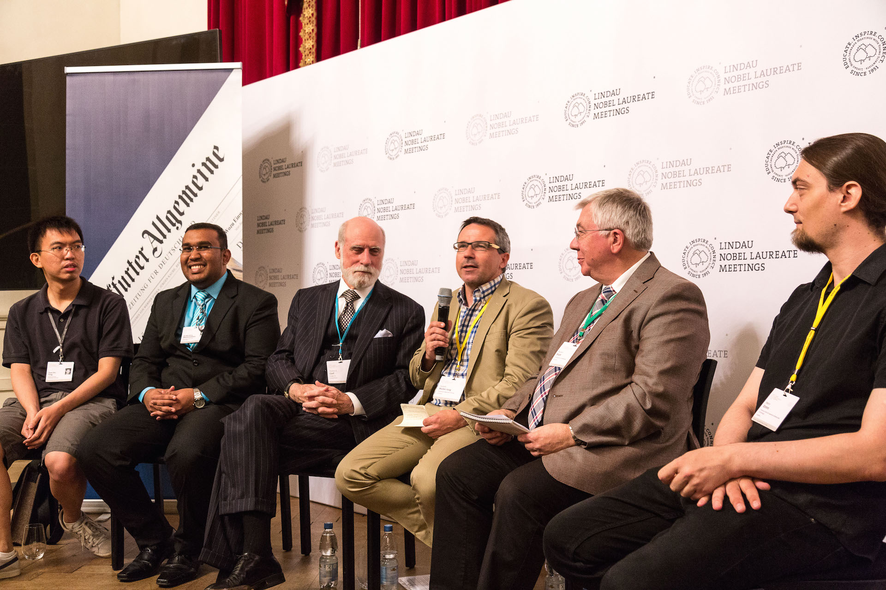
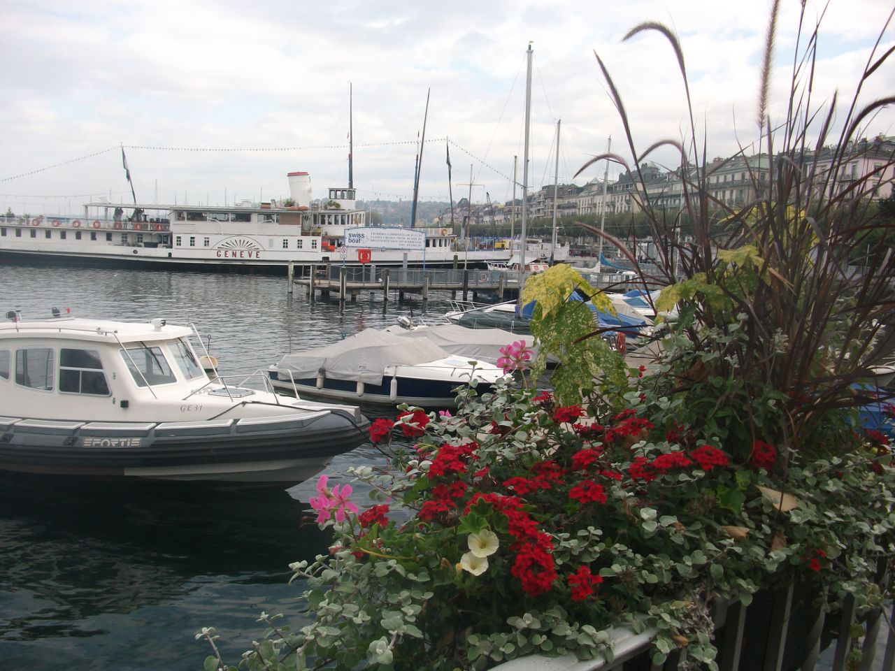
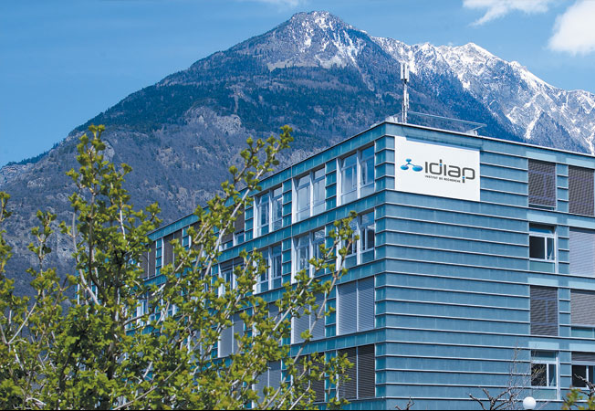
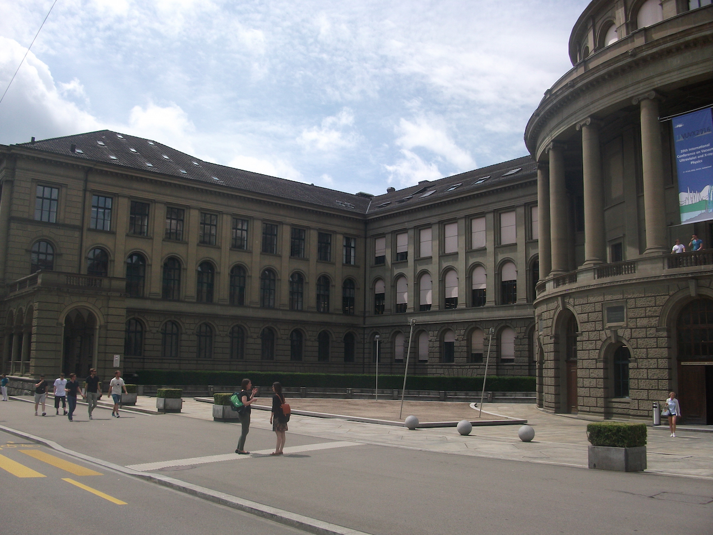
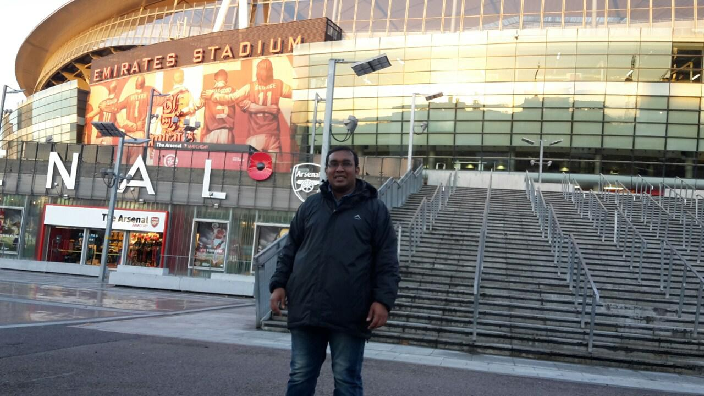
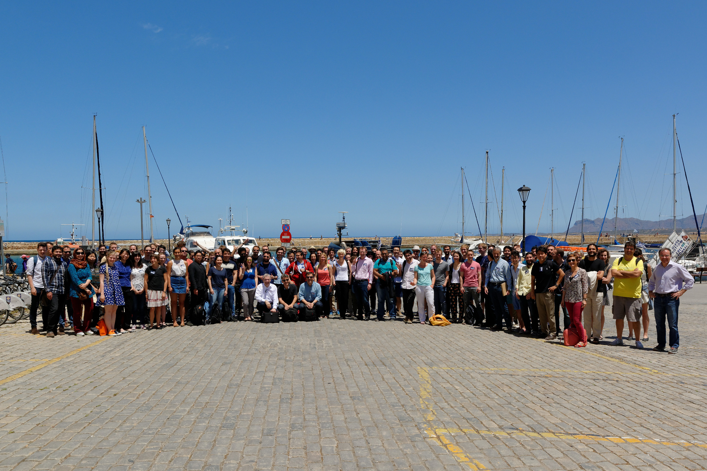
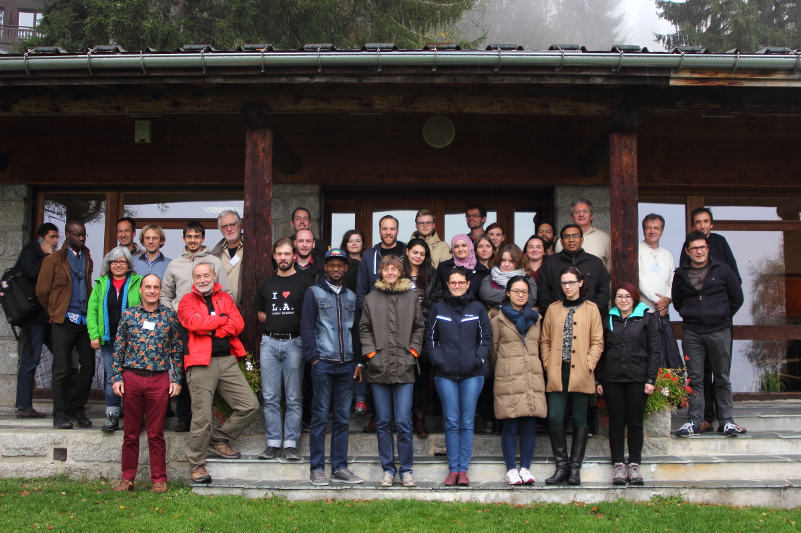

Europe
Germany
- 
- Press talk on artificial intelligence in Lindau - from left to right: Yuan-sen Ting and Arrykrishna Mootoovaloo (young scientists), Turing-Award winner Vinton Cerf, Joachim Müller-Jung, head of the FAZ’s science/nature division, Prof. Rainer Blatt, 1 of 2 scientific chairmen and Mario Krenn from the Vienna Center for Quantum Science and Technology.
I was one of the 400 participants who got selected to attend the 66th Lindau Nobel Laureate Meeting in Germany. This meeting also gathered 31 Nobel Prize winners and we had the opportunity to meet them and discuss various topics in a rather informal fashion.
I also took part in several events such as the Africa Outreach Breakfast and another breakfast which was on Excellence in Science and Sports. Moreover, I had the opportunity to visit Continental where I learnt about how Machine Learning techniques are being used for car braking systems.
In addition, I also took part in a Press Talk along with Vint Cerf, Google's Vice President and Chief Internet Evangelist. This event was organised by FAZ (Frankfurter Allgemeine Zeitung) and was based mostly on how Artificial Intelligence might affect our life.
Switzerland
- 
- Geneva
In 2015 and 2016, I had the opportunity to visit my co-supervisor, Professor Martin Kunz at the University of Geneva. When I was in Geneva airport, I was so happy, simply because I was able to speak my French to the officer at the passport control.
The purpose of my visit was obviously to discuss the work which we were doing together. In 2015, as we had just started the project, we were still struggling to understand why the MCMC was not working in one situation, but one year later, in 2016, we were writing the paper together. Wow!
At that time, I was doing my Masters and I got to meet several PhD students at the university. They were all advising me about what it is like doing a PhD. I first met David Daverio when we were having lunch together. He was the coolest guy I've ever met. I also met Apple (Martin's wife) when we went hiking in 2015. When I saw her in 2016, she was expecting a baby.
- 
- IDIAP Research Institute
In 2015, I visited IDIAP research institute, where I met James Newling. He was Bruce's ex-Masters student and he was doing his PhD with François Fleuret on Machine Learning at IDIAP and EPFL (École polytechnique fédérale de Lausanne).
James invited me to attend his talk in which he explained the work he was doing. This was held in François' office and his group of students was also present. I got to meet François and I was honoured to be in his office following the talk. Shortly after the talk, I had a chat with James and the take-away message from him was, "research is hard!"
I have a plan of doing a PhD in Machine Learning and I found IDIAP quite interesting. It is located in a peaceful place, surrounded by beautiful mountains. I can also speak French and Martigny is not far from Geneva and Lausanne.
- 
- ETH Zurich
On the other hand, in 2016 when I visited Martin, I seized the opportunity to visit the Institute for Machine Learning at ETH Zurich. Unfortunately, my visit was during the holiday period and I was not able to meet Faculty members but I was fortunate to speak to some of the PhD students.
I was fortunate to meet Olivier Bachem, Baharan Mirzasoleiman, Nico Gorbach and Yatao Bian. Nico did his undergraduate and masters study at the University of Cape Town. So he had an idea of the background I was coming from. In short, they all gave me an idea of how I should work if I were to do a PhD in Machine Learning at ETH Zurich. I also learnt about the PhD system, in which case PhD students would normally teach as well.
I was particularly interested in deep learning and it turns out that the Data Analytics Lab was the group doing some work on that topic. Unfortunately, I did not get the opportunity to visit this group.
United Kingdom
- 
- Emirates Stadium, London
I also had the opportunity to visit Dr Michelle Lochner who was doing her first post-doc in the UCL Astrophysics Group. She worked with Bruce for her PhD. She was among the first students to have worked on the BIRO project, which was proposed in a JEDI. Michelle and I discussed a little bit about Statistical methods, which she also learnt and applied in the BEAMS paper.
Moreover, in 2016, before going to the summer school in Chania, I was lucky to visit Prof Andrew Jaffe at Imperial College. We continued our work on using Bayesian Methods in radio astronomy. I also met several PhD students who encouraged me to join the department for a PhD.
Greece
- 
- COSMO21 - Chania, Crete, Greece
The COSMO21 - Statistical Challenges in 21st Century Cosmology workshop was held in Chania, just after the ADA8 - Astronomical Data Analysis Summer School. In particular, I liked the idea of having a summer school prior to a conference as I learnt more about Bayesian Methods and Sparsity. It was the first time I got the chance to meet Dr Roberto Trotta. I learnt about Bayesian Statistics by watching some of his videos and by reading his well-crafted paper; Bayes in the sky.
In addition, for the actual conference, there were many interesting talks as well as a poster session. The prize for the best poster was in fact on Machine Learning. During the concluding session, it had been decided that next time, when the summer school will be organised, there will be a dedicated tutorial session on Machine Learning.
France
- 
- Group Photo Taken At Les Houches Physics School
I also went to École de Physique des Houches where the School of Astrostatics was held. The major theme of this school was on Clustering and Classification and the aim was to bridge the gap between astronomers and statisticians. As far as I know, this has been a topic of heated debate in the astronomy community. Are astronomers "good" statisticians? In particular, there were several talks and tutorials on Bayesian Statistics and Machine Learning using R programming.
I remember it was the first time in my life, that I saw snow! Over and above, we went on top of Aiguille Du Midi and I must admit that for me, it was extremely cold. Normally, the average temperature in Mauritius, the place where I grew up, is around 25 oC.